Everything you need to open the demo, use each tab with your own Marathi text, and switch on the full models. No technical background needed.
Marathi-NLP-Demo.html (double-click it).The demo can run in three ways. Most of the time you only need the first one.
| Way to run | What you need | What you get |
|---|---|---|
| A. Just the web page recommended |
Any browser (Chrome, Edge, Firefox, Safari). No installation. | All three tabs work on any text you paste. Category, sentiment and entities use small built-in models. Translation needs internet. |
| B. Web page + model server | Python 3.10 or newer, plus one command left running. | Same page, but category, entities, sentiment and translation use the full, more accurate models. |
| C. Streamlit dashboard | Python, and about 10 minutes of one-time setup. | A second app that also searches all 3,000 articles and can fetch today's news. |
Marathi-news-intelligence-pipeline.Marathi-NLP-Demo.html. It opens in your web browser.The project is at github.com/anishc23/nlp-project. GitHub shows HTML files as code,
so you have to download the page first:
Marathi-news-intelligence-pipeline, then
Marathi-NLP-Demo.html.To get the whole project instead, click the green Code button, then Download ZIP, and unzip it.
The page is one file of about 4 MB. You can email it, copy it to a pendrive, or open it on a phone. Everything except translation works offline. The internet is only used for nicer fonts and for English translation.
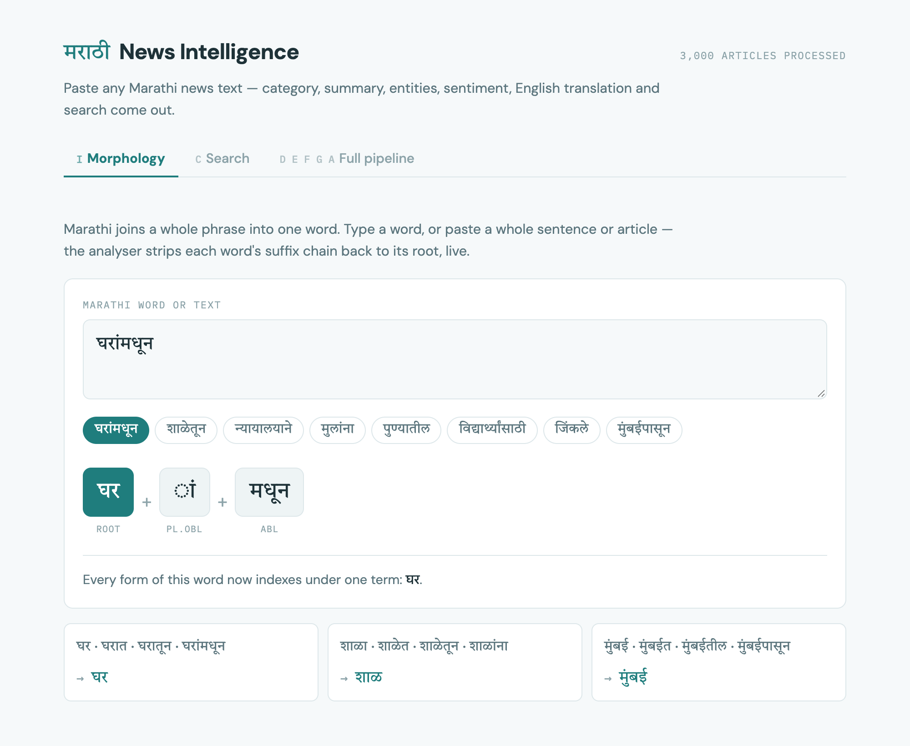
There are three tabs across the top. The small letters before each name are the NLP task codes from the assignment list:
| Tab | Task codes | What it does |
|---|---|---|
| Morphology | I | Breaks Marathi words into a root plus grammar endings. |
| Search | C | Searches 400 news articles, with and without the root-finding step, side by side. |
| Full pipeline | D E F G A | Takes a whole article and gives its topic, summary, names, tone and English translation. |
Marathi joins what English says in several words into one word. For example घरांमधून means "from inside the houses". This tab splits such words back into their pieces.
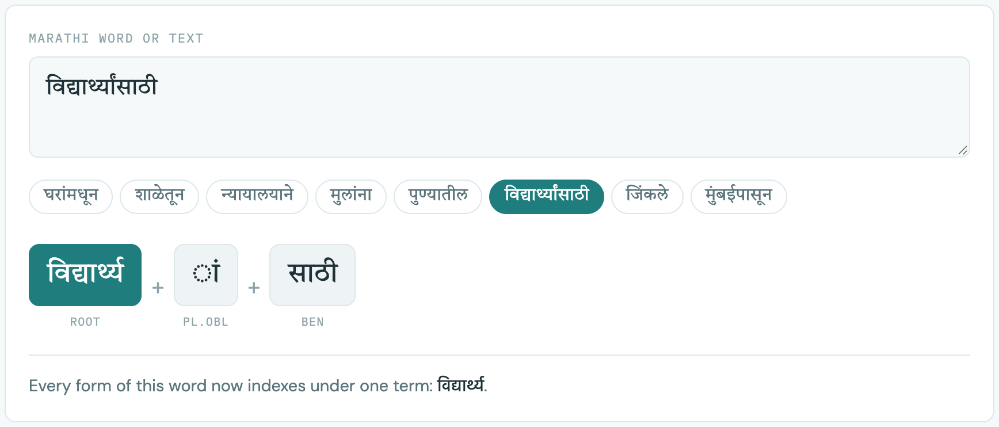
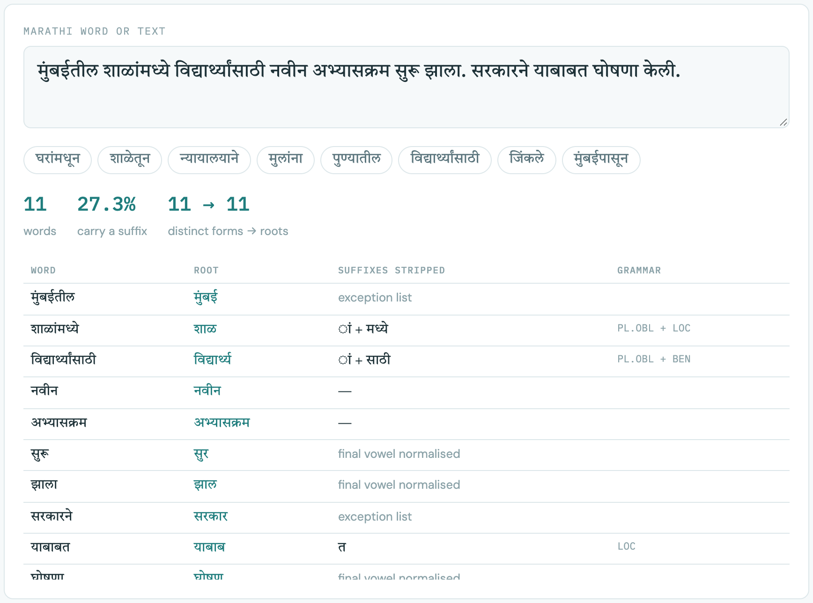
| — | The word had no ending. It is already a root. |
| exception list | A word the analyser handles with a fixed answer, so it is not cut wrongly (for example सरकारने stays सरकार). |
| final vowel normalised | Only the last vowel sign was dropped, so related forms (शाळा, शाळेत) end up with the same root. |
| Label | Meaning | Example ending |
|---|---|---|
| PL.OBL | plural form before another ending | ां |
| LOC | "in / at" | त, मध्ये |
| ABL | "from" | पासून, मधून, तून |
| GEN | "of" | चा, ची, चे, च्या |
| DAT | "to / for (a person)" | ला, ना |
| INS | "by" | ने, नी |
| BEN | "for (the sake of)" | साठी |
| PST / FUT / PRS | past / future / present verb endings | ले, णार, तो |
The three cards at the bottom of the tab always show four forms of one word collapsing to a single root:
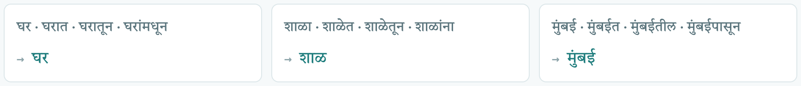
There are two search engines over the same 400 news articles. The only difference: the right-hand one reduces every word to its root first (using the Morphology tab's analyser); the left-hand one does not.
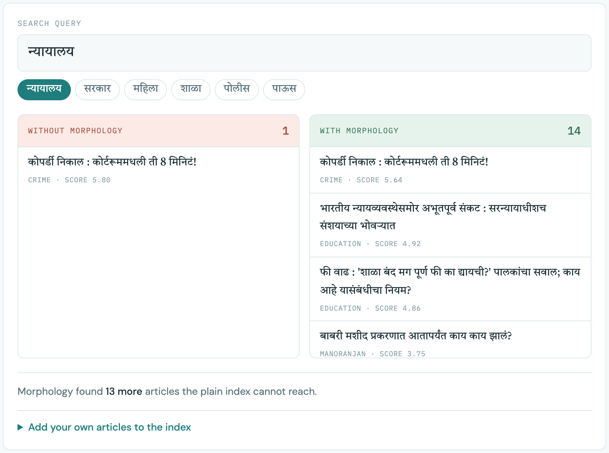
The line under the results explains what happened. For some words both sides find the same number, because the articles use the word in exactly the same form:
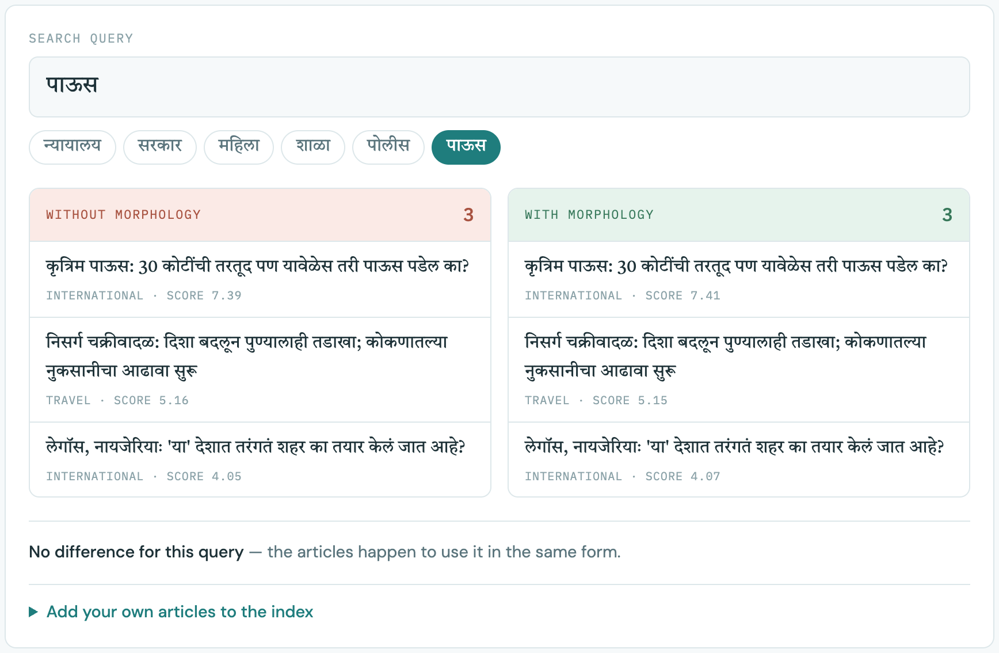
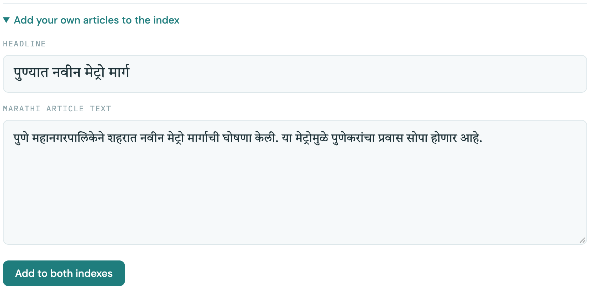
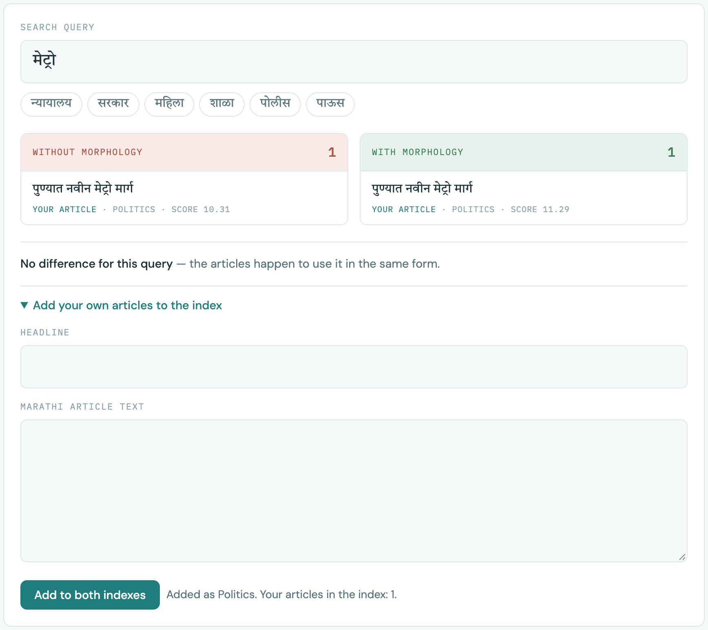
Added articles are kept only until you reload the page.
This tab takes a whole news article and runs every stage on it.
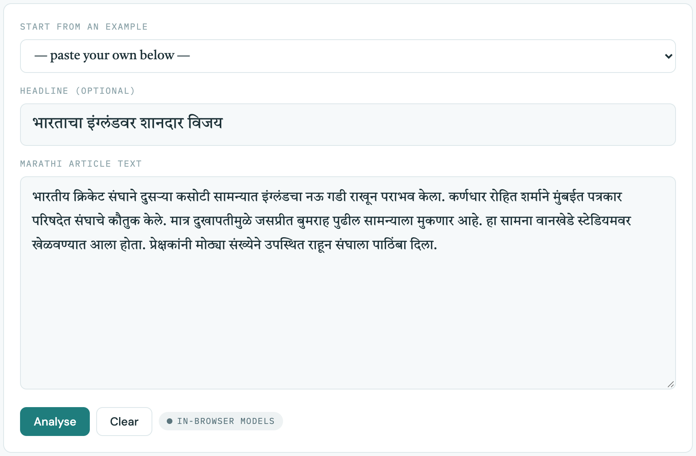
The results appear below as a stack of boxes, one per stage, in the order the pipeline runs them.
| Box | What it shows |
|---|---|
| Input article | Your headline, how many words it has, and what share of them carry a grammar ending. |
| D · Category | The three most likely topics out of 12 (Politics, Sports, Health…) with confidence bars. |
| E · Summary | The three most important sentences of the article, in their original order. |
| G · Entities | Names found in the text, grouped as Person, Organization, Location, Date, Designation and so on. |
| F · Sentiment | The overall tone (Positive, Neutral or Negative), a colour bar, and the tone of each summary sentence. |
| A · English translation | A button that translates the headline and summary to English (see section 7). |
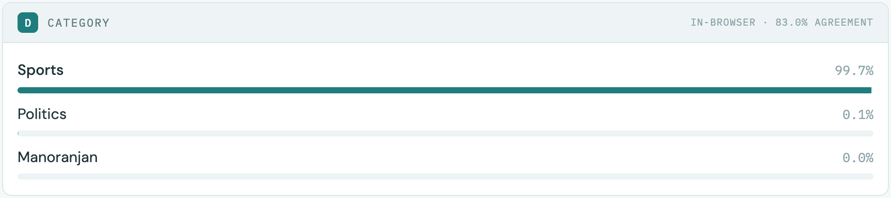
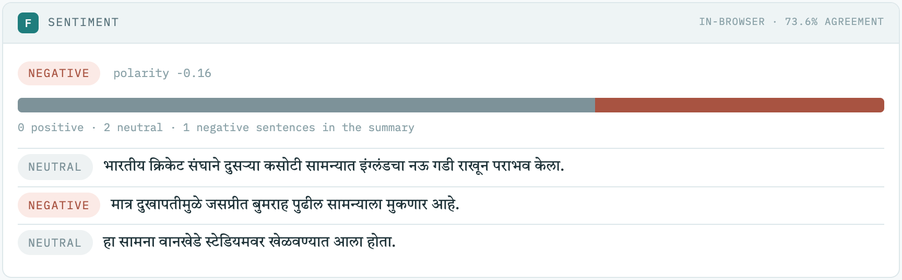
The top-right corner of each box says which model produced it:
| in-browser · 83% agreement | A small model built into the page. The number is how often it gives the same answer as the full model, measured on 1,362 articles it had never seen. |
| full model | The real, large model, used when the model server is running (section 8). |
| TextRank · same algorithm as Python | The summary uses exactly the same method as the Python project, so it is identical either way. |
The built-in entity finder is the least accurate part (it agrees with the full model about 72% of the time). In the example above it wrongly marks विजय ("victory") as a person's name. For the most accurate results, start the model server (section 8).
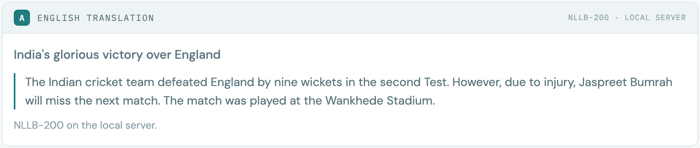
The page can hand your text to the project's real, full-size models, which are more accurate. You need Python 3.10 or newer.
Open a terminal (Mac: Terminal; Windows: Command Prompt) in the
Marathi-news-intelligence-pipeline folder and run:
python3 -m venv .venv source .venv/bin/activate # Windows: .venv\Scripts\activate pip install -r requirements.txt
python app/server.py and leave the window open.Marathi-NLP-Demo.html.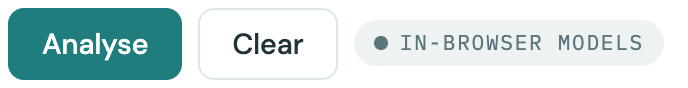
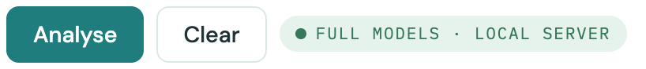
The difference shows most in the entities. The same article, with the full model:
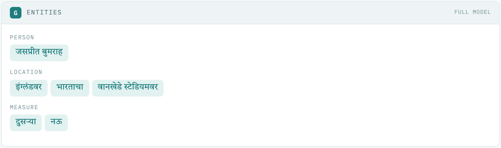
A second app that works over all 3,000 processed articles. After the one-time setup in section 8, run these once (they take about 10 minutes and download the datasets):
python scripts/download_data.py python scripts/build_corpus.py --limit 3000 python scripts/build_index.py --plain-bm25
Then start it any time with:
streamlit run app/dashboard.py
It opens in the browser with five tabs: Search (all 3,000 articles, with topic and tone filters), Overview (topic and tone charts), Entity tone (how a person or party is covered), Morphology, and Analyse (paste text, or fetch today's news from BBC Marathi, ABP Majha and Lokmat).
| Problem | What to do |
|---|---|
| GitHub shows lines of code instead of the page | Use Download raw file and open the downloaded file (section 2). |
| Marathi letters look plain or slightly different | That is only the font; without internet the page uses your computer's Marathi font. Everything still works. |
| "That doesn't look like Marathi text" | The page only analyses text in Devanagari script. Paste Marathi, not English or romanised Marathi. |
| The summary says "Too short to summarise" | No sentence had three or more words. Paste full sentences ending with । . ! or ? |
| The summary is the whole text | With three sentences or fewer there is nothing to shorten. Paste a longer article. |
| "Translation failed: Could not load the translation program — this network blocks …" | Your network (often mobile data) blocks all four sites the translator is downloaded from. Switch to another network such as Wi-Fi or a different hotspot, use Show saved translation for the examples, or run the model server (section 8). |
| "Translation failed: Could not download the translation model from huggingface.co" | The connection dropped, or the network blocks huggingface.co. Click the button again, or use another network or the model server. |
| Translation is very slow the first time | It is downloading about 900 MB. Watch the progress line; it only happens once per browser. |
| Badge still says "In-browser models" with the server running | Check the terminal still shows the server, then click Analyse again (the page checks on every click). The server must use port 8765; close any other program on that port. |
| My added search articles disappeared | They are kept only until the page is reloaded. Add them again. |
| The browser's developer console shows "connection refused" | Harmless. It is the page checking whether the model server is running. |
python app/server.py and run Analyse once, so the full models are already loaded.